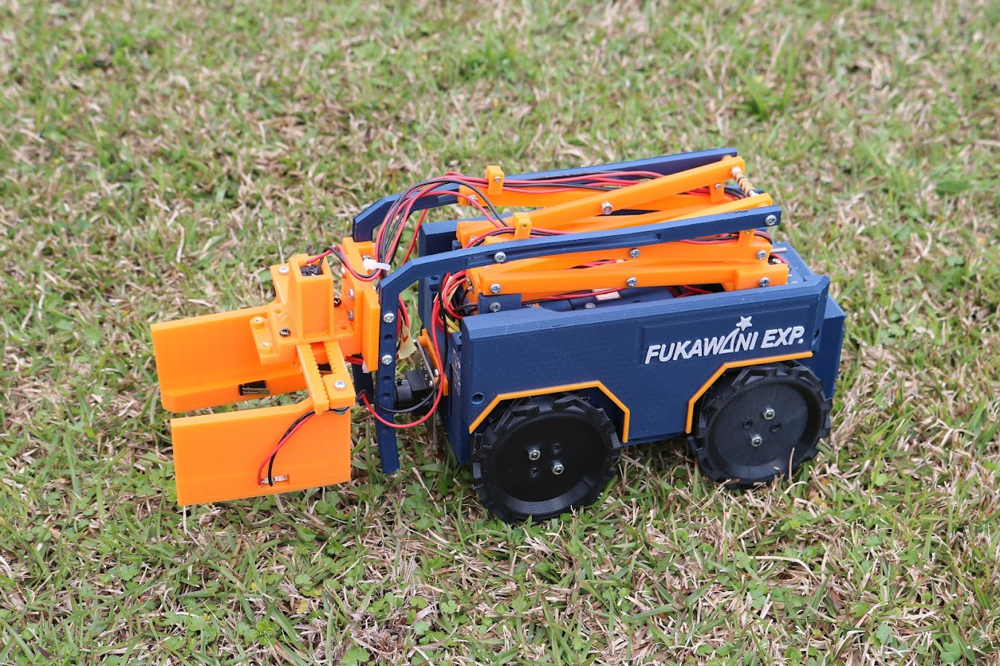
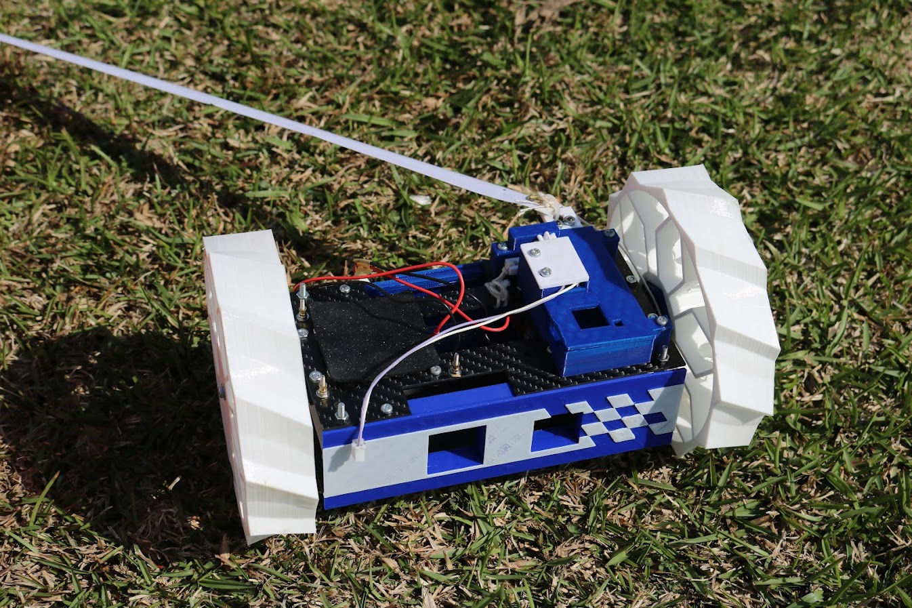
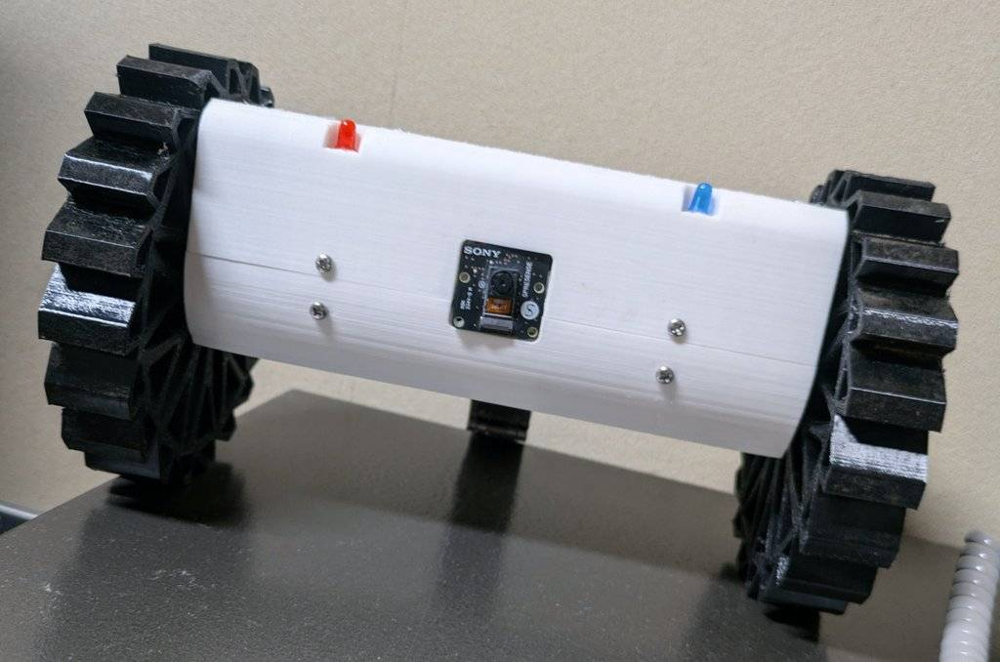

Cansat班
芝浦工業大学の団体である芝浦宇宙航空研究開発部SHARXSのCansat班の紹介ページです
Cansatとは
Cansatとは,350ml缶サイズ,あるいはその3倍程度のOpenClassと呼ばれるサイズの模擬人工衛星のことです。
アンテナや通信機,マイコンや各種センサを搭載し,アマチュアロケットや気球等で上空まで持っていった後,大気中に放出します。
その後,パラシュートやパラフォイルでゆっくりと落下してゆく過程で様々なミッションを遂行するというものです。
過去機体

- 

- 
.jpg)
- "
代表プロフィール
Cansat 代表 2年生 藤田
みなさんこんにちは,皆さんはCansatという存在をご存じですか?おそらく多くの方は知らないと思います。
それもそのはずです。CansatはRocketと比べ一般的な知名度は高くないです。ただ,Cansat開発も宇宙開発の一部なのです。
Cansatは様々なセンサーや画像認識などを用い,目的地まで自動で進むロボットです。どうすれば確実にそして安全に動かすことが出来るかを
日々私たちは研究しています。
活動内容
-
機体班

CADや工作機械を実際に使用して機体のデザインから材料選定、各種部品の製作を行います。
試験やシミュレーションなどを通して環境に合う壊れない機体作りを一から行う部門です。 -
電装班
機体班は名前の通りCansatの機体部分を製作し1チームに2~3人程います。使う素材や形状は自分達で決めて設計をします。
主に3Dプリンターやホームセンターに売っている素材を使って製作をしています。
-
プログラム班
機体班は名前の通りCansatの機体部分を製作し1チームに2~3人程います。使う素材や形状は自分達で決めて設計をします。
主に3Dプリンターやホームセンターに売っている素材を使って製作をしています。
今までの歴史と成果
| ~年~月 | SHARXS_Cansat部門発足 |
|---|---|
| ~年~月 | 種子島ロケットコンテスト自律制御カムバック部門 第3位 |
| ~年~月 | ARLISS ミッション部門総合優勝 |
| 2024年3月 | 種子島ロケットコンテストオリジナルミッション部門第3位 |
アクセス・部室場所
JR宇都宮線「東大宮駅」 東口 徒歩 20分
(土・日・祝日以外は学バスが駅前から出ています)
部室場所 クラブハウスB棟 201号室